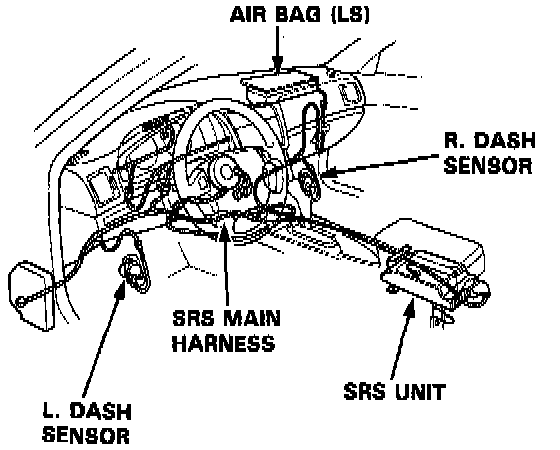
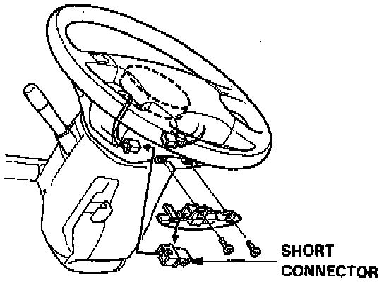
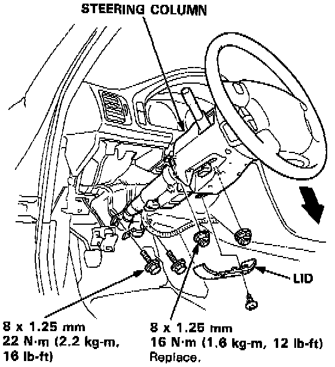
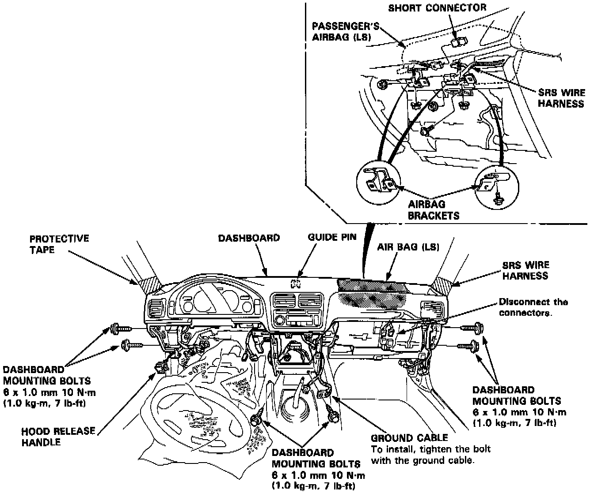
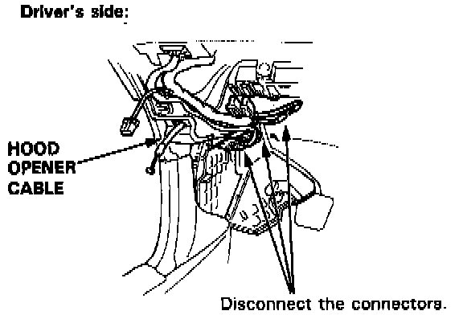
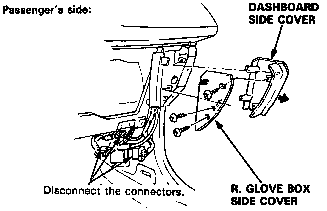

Dash Board Removal and Installation

SRS wire harnesses are routed near the dashboard and steering column.
WARNING: All SRS wire harnesses and connectors are colored yellow. Do not use electrical test equipment on these circuits.
CAUTION: Be careful not to damage the SRS wire harnesses when servicing the dashboard and steering column.

WARNING: To avoid accidental deployment and possible injury always install the protective short connector on the inflator connector when the harness is disconnected.
1. To remove the dashboard, first remove the:
- Front seats.
- Center console panel.
- Center armrest.
- Stereo cassette/radio.
- Glove box lower panel.
- Glove box.
- L. glove box cover.
- Dashboard lower cover.
- Kick panel.
NOTE: The L and LS model radios have a coded theft protection circuit. If servicing to the car requires any of the following, be sure you get the customer's code number before you begin work:
- Disconnection of the battery.
- Removal of fuse No. 56 (7.5 A).
- Removal of the radio itself.
After service, reconnect power to the radio and turn it ON.
The word "CODE" will be displayed. Enter the customer's 5-digit code to restore radio operation.

2. Lower the steering column.
NOTE: To prevent damage to the steering column, wrap it with a shop towel.

3. Remove the nuts and screw, then remove the passenger's airbag brackets (LS model).
WARNING: To avoid accidental deployment and possible injury always install the protective short connector on the inflator connector when the harness is disconnected.

4. Disconnect the opener cable from the hood release handle.

5. Remove the glove box side cover and dashboard side cover.
6. Disconnect the connectors.
7. Remove the 6 mounting bolts, then lift and remove the dashboard.
NOTE:
- Use protective tape on the bottom of the front pillar trim.
- Take care not to scratch the dashboard.
8. Installation is the reverse order of removal.
NOTE:
- Make sure the dashboard fits onto the guide pin correctly.
- Before tighting the dashboard bolts, make sure the dashboard wires are not pinched.